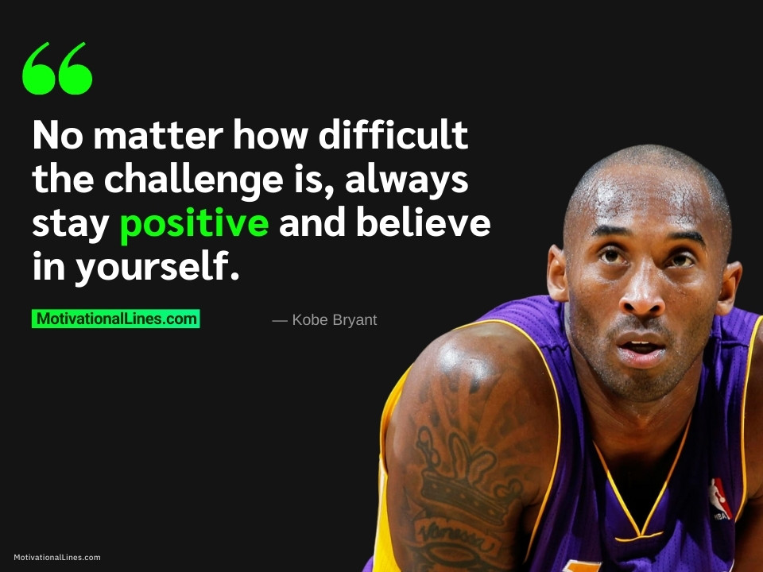

Hello, world. I am Steven Lopez. I am currently in my last year of high school and I hope to attend St. Johns for business next year. Also I have been stock trading for a little over 3 years now. And I understand the fundamentals of trading and have a great understanding of Technical analysis and the psychology aspect of trading. |
 |
 |  |